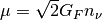
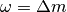

Collective Behavior¶
In a dense neutrino environment, neutrino oscillations could exhibit collective behaviors or synchronized behaviors.
The key of such a behavior is the self interaction between neutrinos.
Phonon
In solid state physics, phonons are the collective behavior of atom or molecule oscillations. The necessary condition for such a behavior is the interaction between atoms or molecules.
Backgrounds of collective effect:
- Matter background
- Neutrino background a) sychronized oscillations: neutrino neutrino interaction potential is large compared toordinary oscillation frequencies in vacuum/medium + large asymmetry between neutrino and antineutrino distributions b) bipolar oscillations: neutrino and antineutrino oscillate in opposite directions; non-zero vacuum mixing angle + some conditions of mass hierarchy. neutrino-neutrino interaction (  ) is larger than vacuum oscillatioin frequency  . like a torque applys to a top where instabilities happpen as the torque force is too big (top wobbles and flips).
Ref
- Raffelt, G. & Smirnov, A. Self-induced spectral splits in supernova neutrino fluxes. Phys. Rev. D 76, (2007). (This paper includes a very brief summary of sychronized and bipolar.)
Collective Phenomenon¶
Neutrino-neutrino interaction can be described by the following Feymann diagram.

They just exchange their momenta.
Electron neutrinos can exchange momentum with other neutrinos including itself. Suppose we have a muon neutrino moving forward, and vacuum oscillations,

Toy model
At site 1, electron neutrino becomes muon neutrino after 1 oscillation length and moving top, while the muon neutrino coming from the left becomes electron neutrino. If they interact, their momenta will be exchanged, leaving a muon neutrino moving to the right and carrying the momentum of the neutrino moving up.
After the interaction at site 1, a electron neutrino is moving up and transforms to a muon neutrino at site 2. The interaction at site 1 will be repeated all the way along the trajectory. And we have all muon neutrinos coming out right of the sites which should be electron neutrinos if we only have vacuum oscillation.
This is a toy model of collective oscillation.
Spectral Split¶
A spectral split phenomenon has been observed in calculations. [1]

Spectral split due to neutrino self interaction. Total flavour content is not changed however the flavour exchange momentum which is refered to spectral split.
| [1] | Duan, H., Fuller, G., Carlson, J. & Qian, Y.-Z. Simulation of coherent nonlinear neutrino flavor transformation in the supernova environment: Correlated neutrino trajectories. Phys. Rev. D 74, (2006). |
Bipolar Model¶

The neutrinos are generated in two classes with the same number density thus making up two total flavour isospins. Neutrino-neutrino interaction could make the oscillation unstable if it is too large.
| [2] | Raffelt, G. & Smirnov, A. Self-induced spectral splits in supernova neutrino fluxes. Phys. Rev. D 76, (2007). |
Dense Homogeneous Isotropic Neutrino Gas¶
The total flavour isospin could precess around effective hamiltonian like the precession of gyroscope with all the indvidual flavour isospin precess around the total flavour isospin.